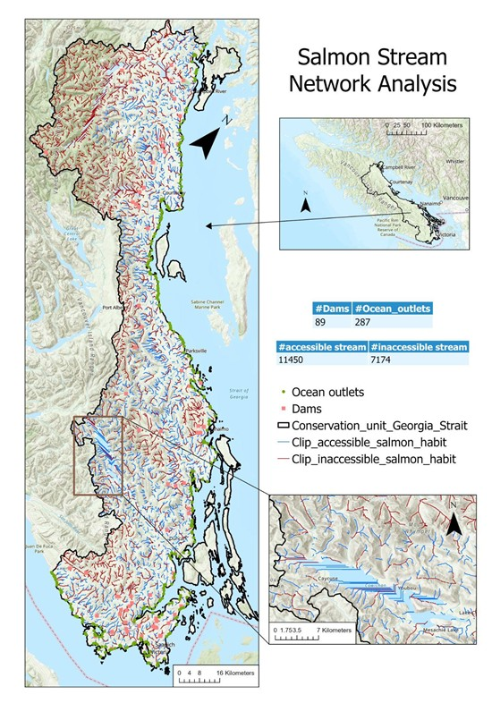

Salmon Stream Network Analysis



Objective
Model salmon habitat connectivity using GIS and Digital Elevation Models (DEMs) to identify barriers and support conservation planning strategies.
Methods
- Derived stream networks from high-resolution DEMs in ArcGIS Pro
- Identified barriers to fish passage (dams, culverts, natural obstacles)
- Analyzed stream flow accumulation and watershed characteristics
- Evaluated stream order dynamics using terrain analysis
- Proposed methodology improvements including:
- Higher-resolution DEMs for better stream delineation
- Lake masking for improved hydrological modeling
- Integration of field validation data
Outcomes
- Successfully mapped the stream network across the study area
- Highlighted critical connectivity issues affecting salmon migration
- Recommended specific dam removal and culvert replacement locations
- Created comprehensive terrain analysis showing stream order dynamics
- Developed priority conservation zones based on habitat quality
Technical Highlights
# Example of ArcPy code for stream network derivation
import arcpy
from arcpy.sa import *
# Set workspace and enable Spatial Analyst extension
arcpy.env.workspace = "C:/GIS_Projects/Salmon_Analysis"
arcpy.CheckOutExtension("Spatial")
# Fill sinks in the DEM
dem = "watershed_dem.tif"
filled_dem = Fill(dem)
filled_dem.save("filled_dem.tif")
# Calculate flow direction
flow_dir = FlowDirection(filled_dem)
flow_dir.save("flow_direction.tif")
# Calculate flow accumulation
flow_acc = FlowAccumulation(flow_dir)
flow_acc.save("flow_accumulation.tif")
# Extract streams (cells with accumulation > threshold)
threshold = 1000 # Adjust based on watershed characteristics
streams = Con(flow_acc > threshold, 1)
streams.save("stream_network.tif")
# Convert raster streams to vector features
arcpy.sa.StreamToFeature(streams, flow_dir, "stream_network.shp", "SIMPLIFY")
Key Findings
This analysis revealed several important insights for salmon habitat conservation:
- Identified three major migration barriers requiring immediate attention
- Mapped critical spawning habitats in headwater streams
- Quantified the impact of watershed degradation on habitat connectivity
- Demonstrated the effectiveness of GIS-based stream network analysis for conservation planning
Significance
The project provides valuable information for salmon conservation efforts, integrating hydrological modeling with habitat assessment. The methodology can be applied to other watersheds to prioritize restoration efforts and improve habitat connectivity. The findings directly support local conservation initiatives and have been incorporated into regional salmon recovery plans.